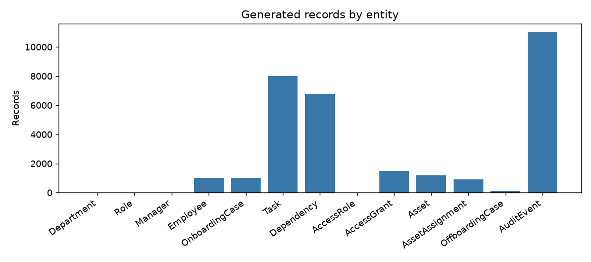
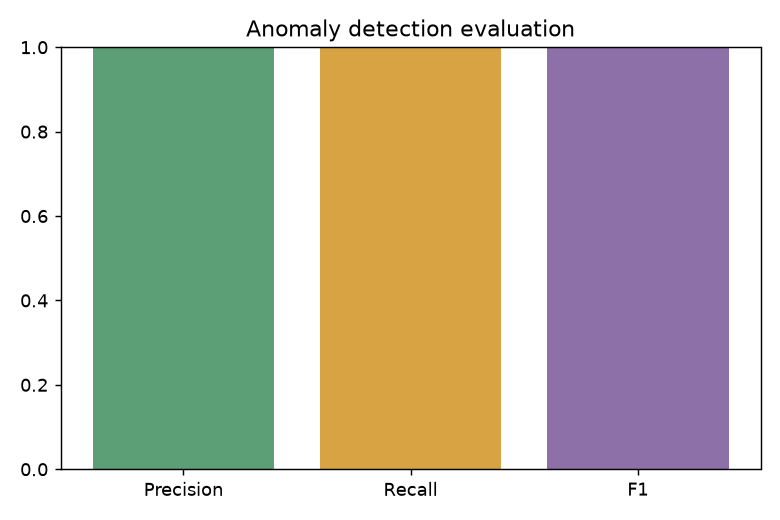

Employee Lifecycle Automation
Synthetic onboarding and offboarding run summary
Dataset size
| Department | 5 |
|---|---|
| Role | 5 |
| Manager | 20 |
| Employee | 1,000 |
| OnboardingCase | 1,000 |
| Task | 8,000 |
| Dependency | 6,801 |
| AccessRole | 4 |
| AccessGrant | 1,500 |
| Asset | 1,200 |
| AssetAssignment | 901 |
| OffboardingCase | 100 |
| AuditEvent | 11,039 |
Workflow metrics
| Onboarding completion | 93.1% |
|---|---|
| Average onboarding time | 14.5 days |
| Overdue task rate | 6.9% |
| Asset recovery completion | 98.9% |
| Offboarding completion | 100.0% |
| Audit coverage | 100.0% |
Anomaly evaluation
100.0%Precision
100.0%Recall
100.0%F1 score
5True positives
The five labeled anomalies are deliberate examples. The validator detects them from operational records and rules; labels are used only for this evaluation.
Detected anomalies
| Issue type | Entity | Record ID | Detection reason |
|---|---|---|---|
| terminated_employee_active_grant | AccessGrant | GRANT-EMP-000001-001 | active grant belongs to terminated employee |
| access_before_start_or_approval | AccessGrant | GRANT-EMP-000002-001 | grant effective before employee start |
| circular_task_dependency | Dependency | DEP-006801 | Task dependency graph contains a cycle. |
| duplicate_asset_assignment | Asset | AST-000001 | Asset is actively assigned to multiple employees. |
| recovered_asset_marked_assigned | Asset | AST-000001 | Recovered asset still has active assignment status. |
Generated records

Anomaly scores

Reports and data
Validation results CSVDetected anomalies CSVMetrics JSONSummary CSVGround truth CSVEmployee CSVTask CSVAll employee data is synthetic. Dates and timestamps use the project's fixed synthetic calendar.